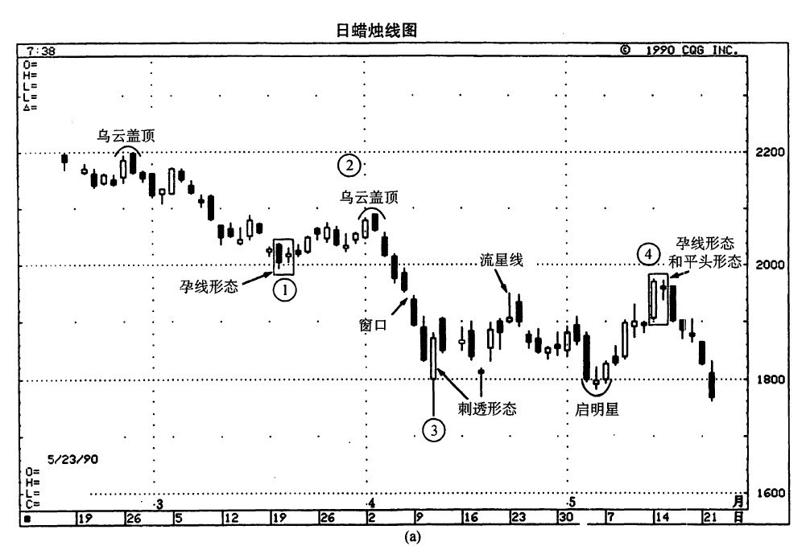
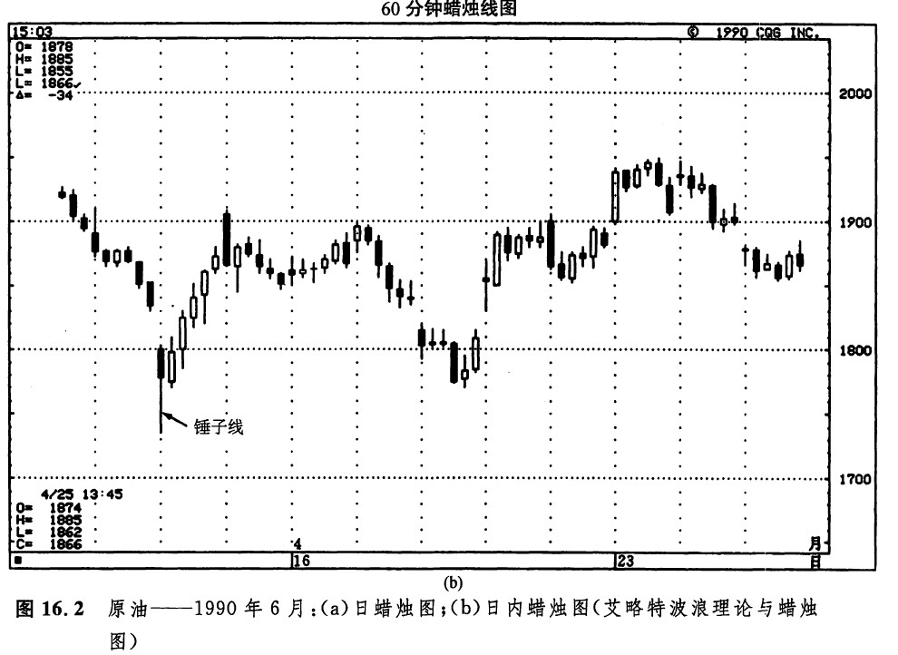
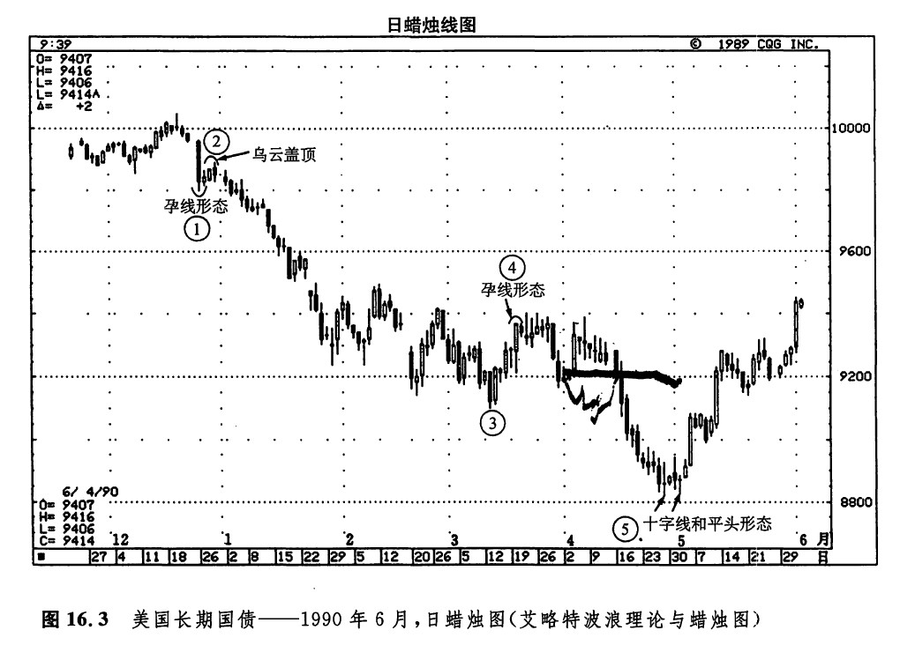

本章所要说明的是，从蜡烛图上能够取得旁证，有助于确认艾略特波浪的终止点。在实际交易中，最重要的波浪是3浪和5浪。3浪通常是最强劲的一段行情；而在5浪的顶部，我们必须及时掉转头寸方向。在以下各例的数浪中，我从我的同事约翰·甘比诺那里获益良多，他对艾略特理论有专门的研究。艾略特波浪的数浪分析具有主观性（至少在波浪最终完成之前是这样的），因此，以下的数浪结论同其他分析者也许不一定相同。
如图16.2（a）所示，我们在本例中标数出一个五浪结构，以下将对每一浪作一番分析。推进浪①是从2月下旬的乌云盖顶形态开始的3月中旬，出现了一个孕线形态，于是推进浪①结束。这一孕线形态出现，意味着之前市场向下的压力正在消退。随后，形成了一段向上反弹行情。这段反弹行情就是调整浪②，它结束于另一个小规模的乌云盖顶形态。推进浪③构成了主要的下跌过程。这段价格运动的范围，可以通过一个菲披纳奇比数和1浪的高度推算出来。估算的结果是，③浪的价格目标在17.60美元。在17.60美元的水平上，我们期望市场形成某种蜡烛图信号，以验证我们标数的③浪的底部。这一信号发生在4月11日。关于4月11日价格变化的详细情况，请看图16.2（b），这是上述原油市场的日内图表。


在4月11日的头一个小时内，原油市场从前一天的收市价起，向下狂泻了1美元。在这一时刻看来，这场抛售行情似乎还未终结。但是后来，出现了一些有趣的价格变化。这场抛售行情在17.35美元处突然中断——这与艾略特理论预测的17.60美元非常接近。其次，在这张小时线图表上［请看图16.2（b）］，随着这轮抛售行情的结束，当天的头一小时最后形成了一根经典的锤子线。在这个潜在的看涨指标之后，立即出现了一系列坚挺的长长白色实体。在这张小时图表上，这根看涨的锤子线，以及之后的这些白色蜡烛线，验证了我们标数的③浪的底部。在上面的日蜡烛线图上，也提供了一个底部反转信号。4月10日和11日的价格变化组成了一个刺透形态。接下来，我们预期市场将产生4浪的上涨行情。
根据艾略特波浪理论，④浪应当构成上涨行情，但是④浪的顶部不应当向上超过1浪的底部。在这个实例中，这个水平大约为19.95美元。当市场接近这一水平的时候，我们希望看到看肤的蜡烛图线索。结果，这种情况果然出现了。5月14日和15日，市场在20美元之下形成了一个十字孕线形态，以及一个平头顶部形态。于是，上涨过程陷入停顿，④浪达到了顶部。
有趣的是，如果我们将④浪进一步细分为（a）、（b）、（c）成分浪，则它们与蜡烛图信号相互印证的情形就更加一目了然了。在（a）处，是一根流星线，它的高点止于4月初出现的窗口的水平上。在（b）处，一个启明星形态标志着市场底部的形成。成分浪（c）浪的顶部也是④浪的顶部，此处出现的看跌蜡烛图指标计有：一个十字孕线形态、一个平头顶部形态。
如图16.3所示，⑤浪推进浪的方向向下，它们是从1989年12月的100.16美元的水平开始的。波浪标数的情况如图所示。在①浪的底部，市场形成了一个孕线形态。在②浪的顶部，形成了一个乌云盖顶形态。③浪底部没有出现蜡烛图指标。④浪的顶部构成了一个孕线形态。在本例的艾略特五浪形态中，最吸人的地方是其第⑤浪，即最后一个下跌浪。我们根据第③浪的高度和一个菲披纳奇比数，推导出了第⑤浪的价格目标。由此得到的目标价格水平为88.08美元。4月底，这段下跌行情的低点位于88.07美元。在这个低点处，蜡烛图发出了一组强烈的看涨信号：一个平头底部形态，以及这个平头底部形态内部的两根十字线。交易量的变化也验证了这一底部的形成。请参见图15.1，在那里，我们曾经详细讨论了在这个低点处蜡烛图与交易量相互印证的具体情况。

下一篇：第十七章 蜡烛图与市场剖面图
上一篇：艾略特波浪理论的基本概念
copyright @ 2018 制作：汉钛电线，Hingtak Wire & Cable LLC